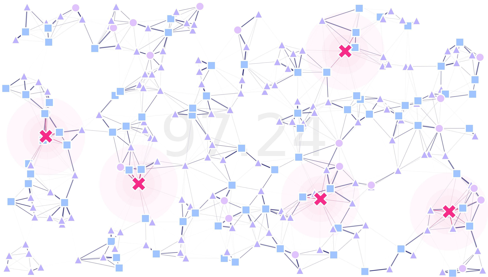

MGSurvE’s documentation!
MGSurvE is a python package designed to optimize the location of mosquito traps in complex spatially-heterogeneous environments. Have a look at our github repo for the latest code or install our package through pypi.
Our tutorials sections contains several examples on use-cases for our software!
Note
This project is under active development and testing.
Features
MGSurvE aims to be a fairly flexible utility that serves as a tool to compare and contrast effectiveness of trapping schemes in a variety of situations. To this end, we have integrated the following features into our package (with more coming in future updates):
Support for different point-types
Random point-process landscape generators
Customizable movement kernels
Different movement kernels for male and female mosquitos
Customizable trap attractiveness kernels
Different attractiveness levels at specific point-type transitions
Different trap attractiveness levels for male and female mosquitos
Immovable traps
Integrated plotting routines
Integrated Map-plotting routines
GA optimization routines integration